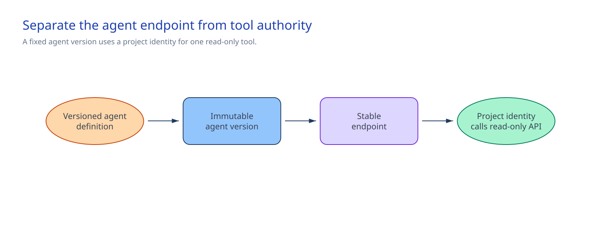

Chapter 2 of 6
Architecture at a glance#
A caller reaches the Entra-authorized stable Responses endpoint. Foundry routes the request to the pinned prompt-agent version. That version can call the single GET operation in its OpenAPI tool. The RAI policy handles model input and output, while Foundry sends server-side traces to the connected Application Insights resource.

The deployment scripts read agent.json, instructions.md, and tool-manifest.json, create an immutable version, and route all endpoint traffic to it. The control boundary ends at the direct read API.
Design choices and tradeoffs#
| Decision | Chosen approach | Tradeoff |
|---|---|---|
| Runtime and release | Persistent prompt agent with an immutable version and pinned endpoint | Every configuration change creates a version |
| Identities | Agent identity at the endpoint; project managed identity for the OpenAPI call | The API sees the project identity, not the user or agent |
| Tool | Attach one GET-only OpenAPI definition directly | Reuse and centralized tool lifecycle stay outside this baseline |
| Routing | Send 100% of traffic to the new version | Promotion is an explicit deployment step |